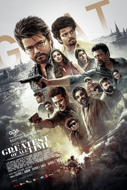

GOAT

The Greatest of All Time (also marketed as GOAT) is a 2024 Indian Tamil-language action thriller film[7] directed by Venkat Prabhu and produced by AGS Entertainment. The film stars Vijay in dual roles, alongside Prashanth, Prabhu Deva, Mohan, Jayaram, Ajmal Ameer, Vaibhav, Yogi Babu, Premgi Amaren, Sneha, Laila, Meenakshi Chaudhary and Abyukta Manikandan. It is the twenty-fifth production of the studio and the penultimate film of Vijay before his political entry. The film follows Gandhi, the former leader of an anti-terrorism squad, who reunites with his squad members to address the problems that stemmed from their previous actions.
The film was officially announced in May 2023 under the tentative title Thalapathy 68, as it is Vijay's 68th film as a leading actor, and the official title was announced that December. Principal photography commenced in October 2023 and wrapped by late June 2024. Filming locations included Chennai, Thailand, Hyderabad, Sri Lanka, Pondicherry, Thiruvananthapuram, Russia and United States. The film has music composed by Yuvan Shankar Raja, cinematography handled by Siddhartha Nuni and editing by Venkat Raajen.
The Greatest of All Time was released worldwide on 5 September 2024 in standard and IMAX formats to mixed reviews from critics, who praised Vijay's performance, action sequences and climax while the lack of character development and writing received criticism. The film grossed ₹440–456 crore at the box office, against a budget of ₹380–400 crore, which is AGS's highest expense and ranks among the most expensive Indian films and is also one of the priciest non-English-language films ever made, emerging as the highest-grossing Tamil film of 2024,[8][9][10] the fourth highest-grossing Indian film of 2024, fifth highest-grossing Tamil film of all time, fifth highest-grossing Tamil film in overseas, and the third highest-grossing film in Tamil Nadu.[a]
Plot
In 2008, at Kenya, the Special Anti-Terrorism Squad (SATS), consisting of M. S. Gandhi and his teammates Sunil Thiagarajan, Kalyan Sundaram and Ajay Govindharaj, intercept the terrorist Omar to extract uranium from him. Their former chief, Rajiv Menon, absconding after being charged with treason, is also on the same train. They retrieve the uranium from Menon and destroy the train he was on, believing everyone on board, including Menon, to have died. Back in Delhi, the team lives undercover as employees of a tourism agency, hiding their real jobs from their families. Gandhi lives with his wife, Anuradha "Anu", who is pregnant, and their five-year-old son, Jeevan.
Gandhi takes his family along to alleviate Anu's suspicions of infidelity when he is assigned a new mission in Bangkok. After completing the mission, Gandhi and his family are attacked, leading to Anu experiencing labour and Jeevan mysteriously disappearing. The police find a charred body believed to be Jeevan's, leaving Gandhi devastated. Anu delivers a baby girl but stops speaking to Gandhi out of grief.
By 2024, Gandhi has left SATS and is working as an immigration officer at Chennai International Airport. He and Anu live separately, and their daughter, Jeevitha, lives with Anu. Upon Kalyan's suggestion, Gandhi's former boss, Nazeer, asks him to go to Moscow to train new officers at the reopened Indian Embassy. Though reluctant, Gandhi agrees, but during his time there, the embassy is attacked by a gang. Gandhi fights them off and is shocked to see one of the attackers, a young doppelgänger. He realizes it is Jeevan and confirms this when he helps him fend off the attackers. They return to Chennai, and the family reunites, with Anu starting to speak to Gandhi again. Nazeer calls Gandhi for an urgent meeting at the Chennai Metro station, stating that the information is so confidential it cannot be told over the phone. A masked man attacks Nazeer. Gandhi arrives just in time to fight off the attacker, but the masked man kills Nazeer. The masked figure is later revealed to be Jeevan and Gandhi swears to find the killer and take revenge for Naseer’s death.
Gandhi returns to SATS to find who is trying to cause a threat to their agency. Nazeer's phone has all the information about Jeevan and his gang from Moscow. Jeevan's accomplice Sha took the phone from Nazeer in the Metro station when Nazeer dropped it. But Sha reveals to Jeevan that the phone went missing. It is found that Jeevan has been working for Menon all this time and has come to Gandhi's family for a reason.
It is also revealed that Menon survived the train explosion in 2008 but lost his wife and children in the incident. Seeking revenge, he tracked Gandhi to Bangkok, kidnapped Jeevan, and placed him in a juvenile facility, instilling fear in him. He then "rescued" Jeevan by killing the members of the facility, earning his trust and renaming him Sanjay after his deceased son. Jeevan, manipulated by Menon, came to believe Gandhi was responsible for the deaths of his family. Fueled by this hatred, Jeevan dedicated his life to Menon and his revenge on Gandhi.
Diamond Babu, a thief, steals Nazeer's phone, containing key evidence. Gandhi tries to buy it, but Jeevan intervenes. Ajay tries to stop Jeevan but is murdered. Abdul and Menon's arrest prompts Jeevan to kidnap Srinidhi, blackmailing Sunil to secure their release. Kalyan requests Gandhi to free them. Sunil witnessing that Jeevan had slashed Srinidhi's throat requests Kalyan to release them and he does so. After they reach the spot Kalyan suffocates her to death prevent her from becoming a key witness, revealing that he had been working with Menon all along. Sunil devastated about his daughter’s death swears revenge once he finds out who was the killer. While tracking down Sha, Gandhi coincidentally finds Jeevan and arrests him. During interrogation, he seizes Sunil's gun, seemingly kills him and forces Gandhi to escort him out, allowing Jeevan to escape. However, Sunil is revealed to be alive and kills Kalyan taking revenge for Srinidhi’s death. Menon kidnaps Anu and reveals a bombing plan, unaware it is Gandhi's ploy. Gandhi captures Menon and brings him to the M. A. Chidambaram Stadium to negotiate with Jeevan to prevent the bombing. Jeevan plans to detonate multiple bombs at the stadium and frame Gandhi for treason. Gandhi, with the help of his brother-in-law Seenu and Jeevitha, prevents the detonation. Jeevan threatens Jeevitha's life, but Gandhi kills him.
It is later revealed that "Jeevan" was a clone created by the real Jeevan, still known as Sanjay, who has since created more clones to target Gandhi.